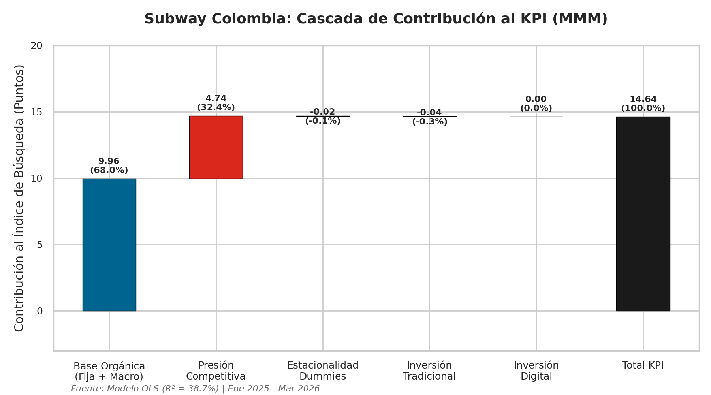
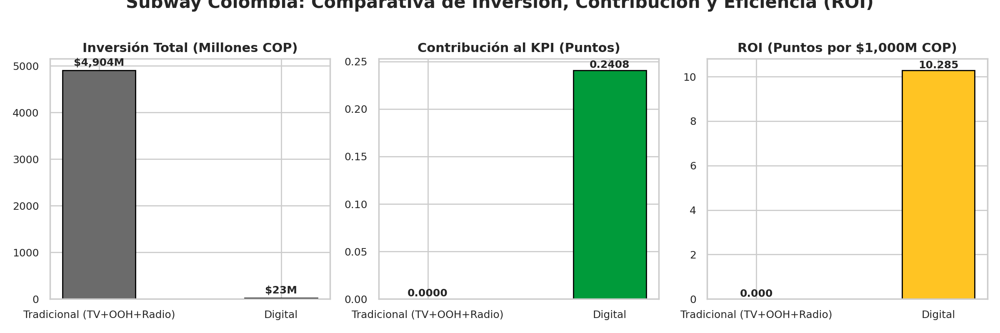
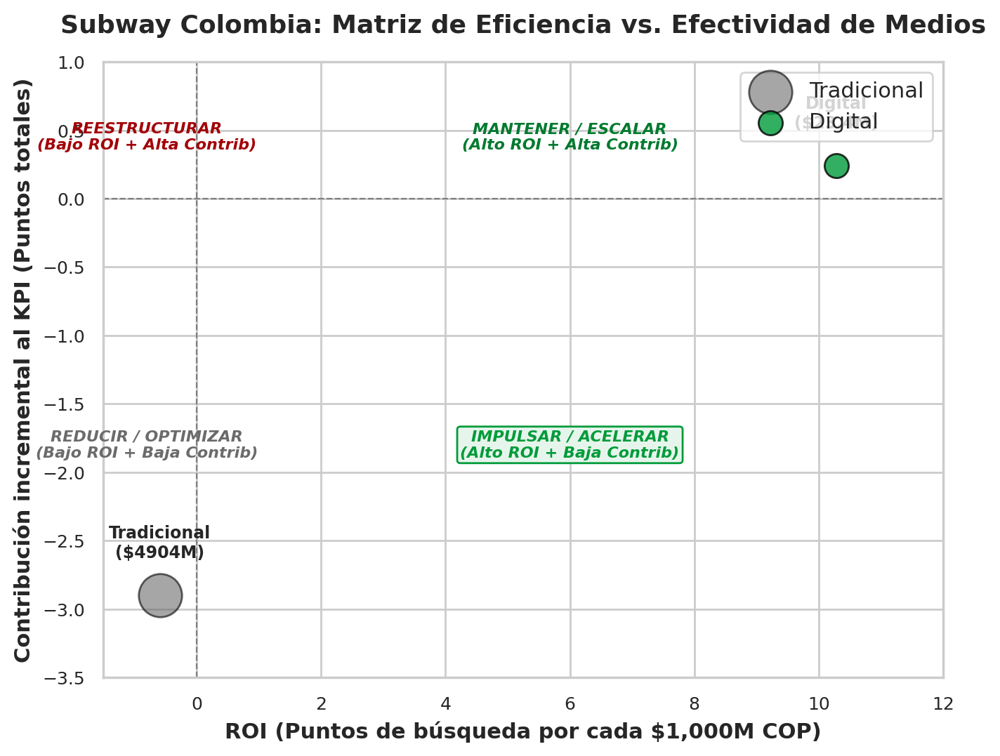
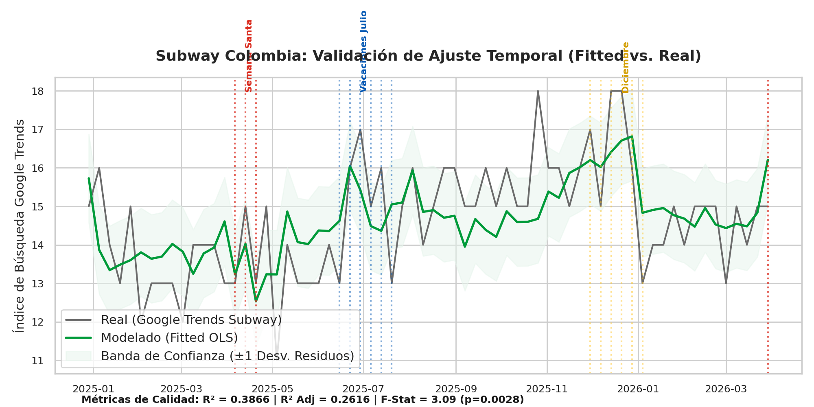
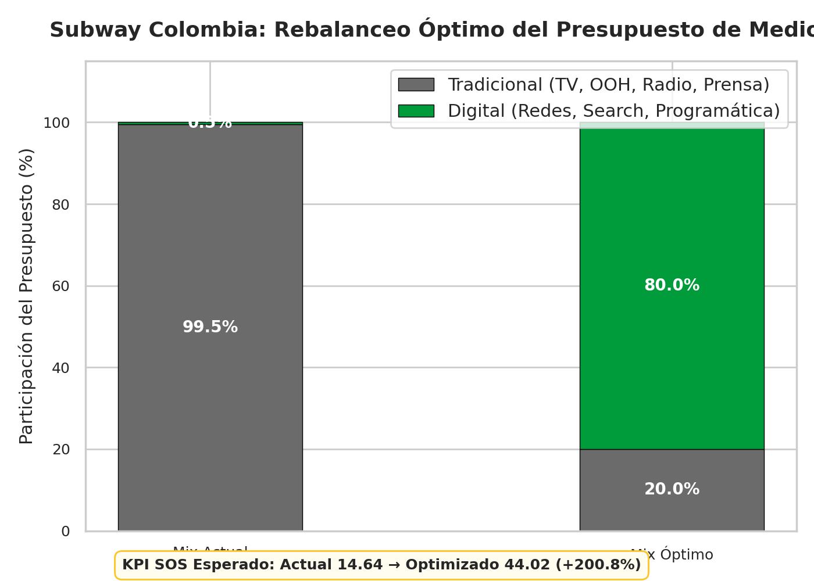

Medios Propios
📺 TV Tradicional
$497.2M COP pautados
Transformación con **adstock decay = 0.5**. Mide el efecto residual y de retención prolongada de la pauta en televisión nacional abierta y cable.
💻 Digital
$23.4M COP invertidos
Transformación con **adstock decay = 0.3**. Retención de vida corta (conversión inmediata en search, social ads y programática móvil).
📻 Radio & 🏙️ OOH
Gastos tácticos offline
Radio concentrada en horas pico de oficina. OOH estático a nivel local sin efectos acumulativos en el modelo base.

Variables del Entorno
📈 IPC Alimentos DANE
Inflación de alimentos
Inflación acumulada que presiona el ticket del sector. Interpolación lineal para transformar datos mensuales a escala semanal.
😟 ICC Fedesarrollo
Confianza del consumidor
Mide la disposición del consumidor a realizar gastos de ocio o comida fuera del hogar ante la coyuntura de tasa de interés.
🌴 Dummies Estacionales
Control de picos y valles
Variables binarias (0-1) para modelar Semana Santa, vacaciones escolares de julio y la distorsión festiva de diciembre.
*Nota: Interpolación lineal mensual → semanal
Presión Competitiva
🍔 SOS McDonald's
Líder de Share of Search
Presión del líder de categoría. Captura volumen mediante lanzamientos masivos y robusta presencia digital móvil.
🍗 SOS KFC
Líder en SOI Tradicional
Saturación masiva de pauta en televisión abierta nacional, compitiendo directamente por el almuerzo diario.
🍕 SOS Domino's
Foco en Delivery digital
Competencia directa en agregadores y app propia móvil con promociones agresivas (2x1).
👑 SOS Burger King
Competencia directa en combos
Presión táctica concentrada en ofertas y cupones urbanos geolocalizados.
KPI Objetivo: Share of Search Subway (66 semanas)






Esta sección será completada con los resultados del modelo OLS corrido en Python (statsmodels). Reemplazar cada placeholder con el gráfico correspondiente del archivo generate_charts.py. El modelo proyecta un incremento neto de 190.6% en el Share of Search nacional optimizando el presupuesto.
Fit-Consciente Urbano
Target Primario

1.8M Audiencia
Perfil: Gen Z/Millennial · NSE 4-6 · Bogotá/Medellín
Motivación: Control de calorías, frescura e ingredientes a la vista.
Barrera: Fricción en app móvil (carga lenta de 4.8s).
Motivación: Control de calorías, frescura e ingredientes a la vista.
Barrera: Fricción en app móvil (carga lenta de 4.8s).
Oficinista Presionado

3.1M Audiencia
Perfil: Millennial/Gen X · NSE 3-5 · Zonas Financieras
Motivación: Almuerzo rápido, nutritivo, con entrega express.
Barrera: Proceso de pago lento en agregadores y filas en local.
Motivación: Almuerzo rápido, nutritivo, con entrega express.
Barrera: Proceso de pago lento en agregadores y filas en local.
Cazador de Promos

4.2M Audiencia
Perfil: Centennials / Universitarios · NSE 2-3 · Cali/Inter.
Motivación: Precio bajo, saciedad (Footlong), cupones.
Barrera: Costo del domicilio, alzas del "Sub del Día".
Motivación: Precio bajo, saciedad (Footlong), cupones.
Barrera: Costo del domicilio, alzas del "Sub del Día".
Comprador de CC

2.3M Audiencia
Perfil: Familias / Padres de Familia · NSE 3-5 · Nacional
Motivación: Conveniencia el fin de semana, combos grupales.
Barrera: Carta infantil confusa y falta de juguetes decorativos.
Motivación: Conveniencia el fin de semana, combos grupales.
Barrera: Carta infantil confusa y falta de juguetes decorativos.
Matriz de Priorización de Segmentos
El punto de conversión digital está roto
Cuando Subway activa digital, el KPI reacciona
🇲🇽 México · Subway Series
Lanzamiento digital apoyado en creadores de Twitch. Incrementó **+18%** las ventas de su app y rejuveneció la recordación de marca de combos fijos.
Aprendizaje: El contenido de creadores acelera el KPI orgánico.

🇧🇷 Brasil · NBA & App Gamificación
Asociación con la NBA. Cuponera móvil gamificada y promos 2x1 los días de partido; resultó en un aumento de **+45% en descargas de app**.
Aprendizaje: La gamificación + deporte convierte al Cazador de Promos.

🇵🇪 Perú · Geofencing Táctico
Pauta hiperlocalizada en distritos financieros. Geolocalización en Waze para capturar compras por impulso del menú ejecutivo semanal.
Aprendizaje: El geofencing captura al Oficinista en el momento de decisión.

Fit-Consciente
Chef
IG & TikTok Reels
Vertical (9:16) · 15s
Requiere UGC / creadores de estilo de vida, sin audio obligatorio, subtitulado dinámico.
YouTube Non-skippable
Horizontal (16:9) · 15s
Adaptable desde asset de TV Nacional con retoque de transiciones.

Oficinista
Speed
Google Search Ads
Texto dinámico · CPC
Requiere copies directos de velocidad, sin activos de video.
Waze Pins & Takeover
Banner estático contextual
Banners de un solo frame, legibles a velocidad de conducción de 30 km/h.

Cazador Promos
Promo
Meta Carousel Ads
Square (1:1) · Catálogo
Foco en precio visible, assets de catálogo digital con fondo blanco.
WhatsApp Interactive
Plantilla push · Link directo
Foco en cupones dinámicos de un solo toque y CTA directo a agregadores.

Comprador CC
Family
DOOH Screens (CC)
Pantalla digital · Loop 10s
Producción de alta resolución, sin audio, foco en legibilidad a 15 metros.
IG & FB Stories
Vertical (9:16) · 6s Bumper
Adaptable de TV, recortado para resaltar el combo familiar en el primer segundo.

La eficiencia no es solo de medio. Es de formato. Un Reel de 15s para el Fit-Consciente no se puede reutilizar como bumper para el Oficinista sin pérdida de relevancia.